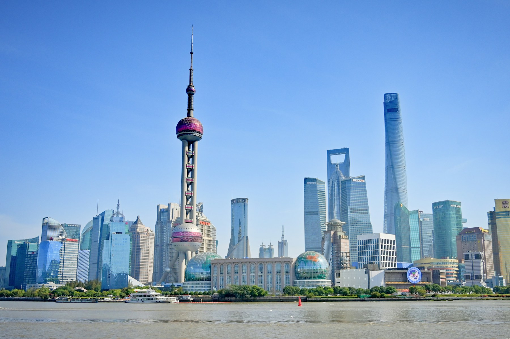
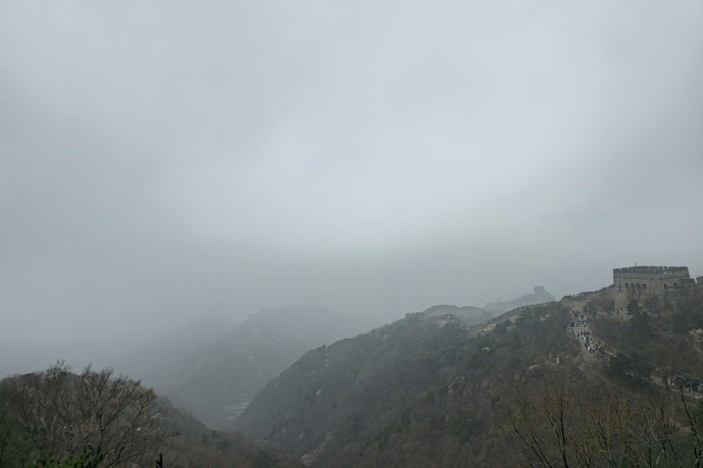
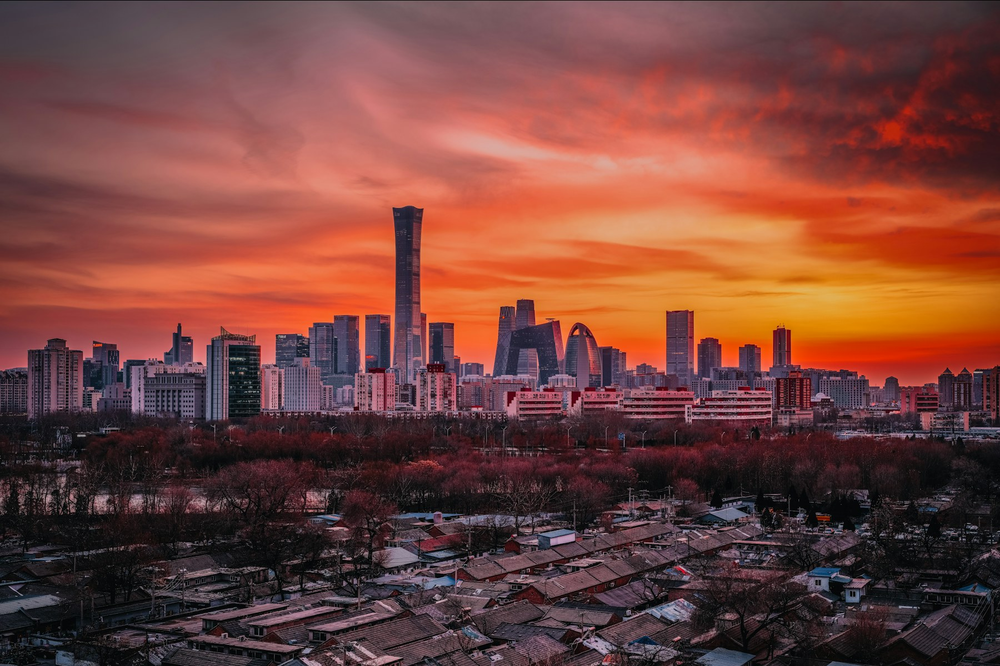
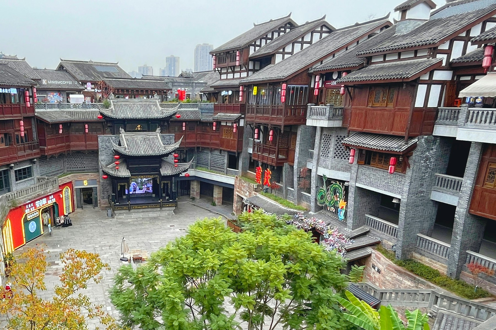
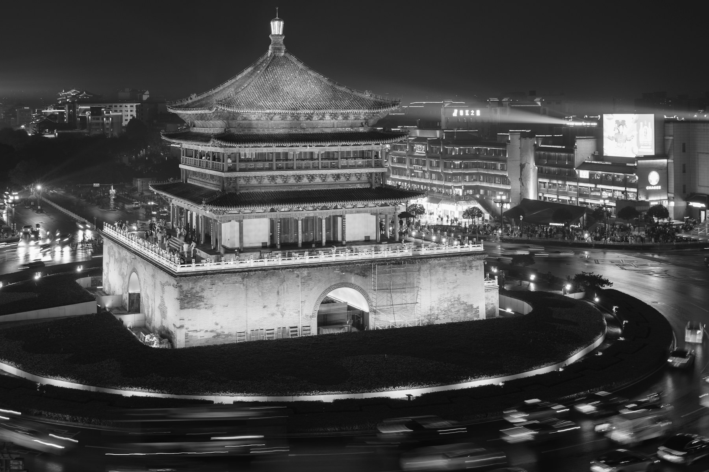
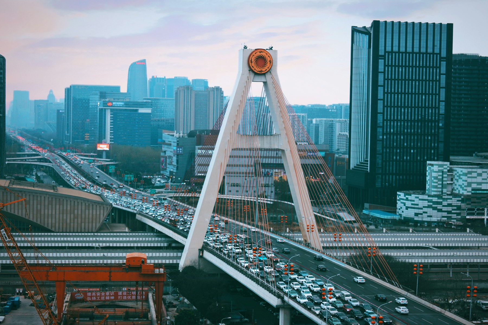
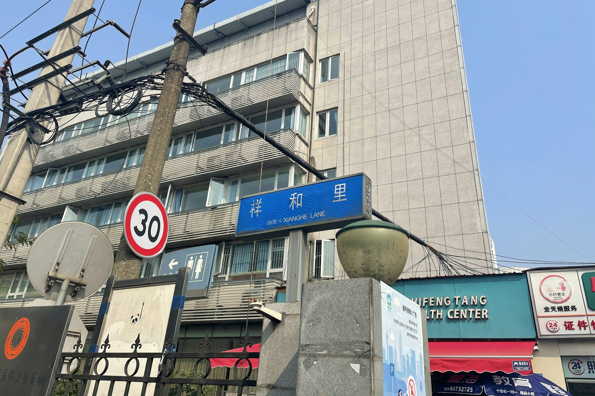
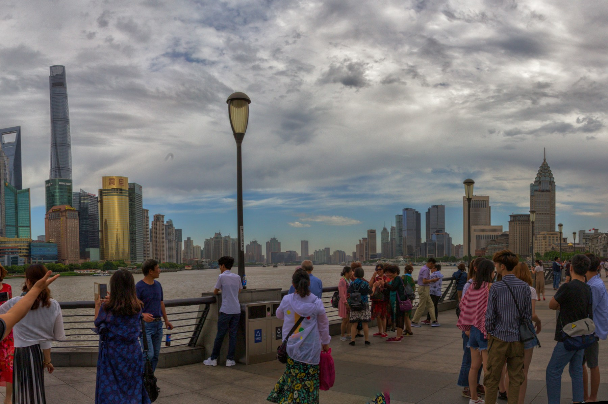
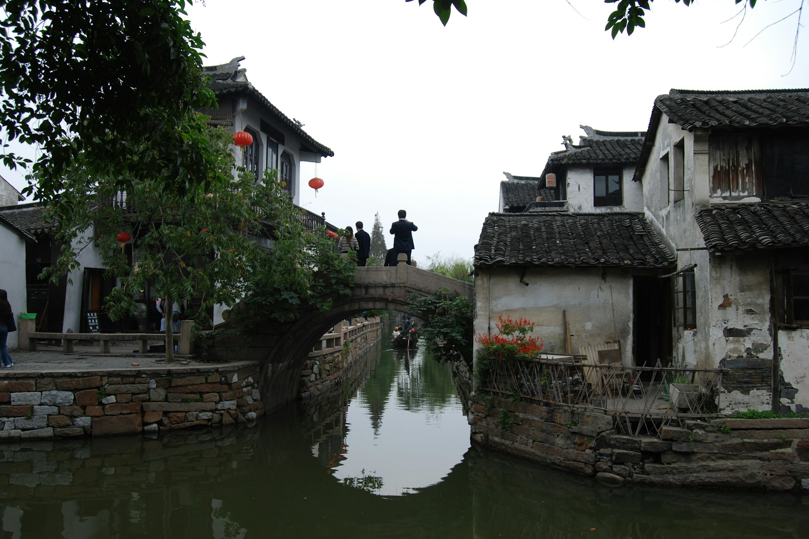
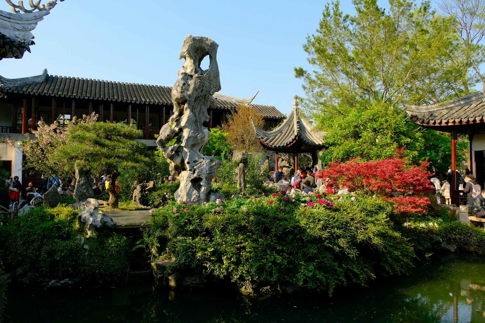

Imperial Heritage & Storytelling
Beijing and Xi'an experiences layered with expert interpretation, private pacing and meaningful access to history.
Talk to our travel team
China Journeys
From imperial heritage to modern skylines, every journey is designed around your pace, interests and preferred travel style.
Journey Themes
Beijing and Xi'an experiences layered with expert interpretation, private pacing and meaningful access to history.
From dramatic river landscapes to contemporary city life, we compose transitions that feel seamless, elegant and personal.
Destinations
Iconic landmarks, regional culture and urban sophistication, assembled as one coherent private journey.
Imperial Heritage



Ancient Capital


Lifestyle & Nature


Modern Contrast



About The Team
Co-Founder
Yan leads operations, brand strategy and cross-cultural journey design across Europe and China.
Advisor & Technology Lead
Kevin supports quality, systems and execution standards to keep every journey delivery reliable.
Contact
Share your priorities, preferred pace and travel style. We will prepare a private proposal designed around you.
Email A Travel Designer